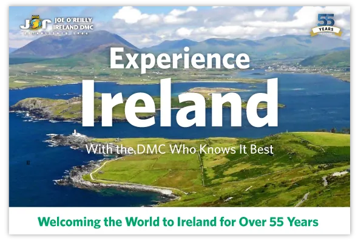

Amazing Group Tours
from Ireland's DMC
All of Joe O'Reilly Ireland DMC's tours are immersed in Irish culture. We make sure that your guests will see the best of what Ireland has to offer.

Click the button below to download our full brochure:
Our Most Popular Group Tour
The Best of Ireland
Our 8-Day Flagship Tour
Your guests take in the best of Irish scenery, explore our most iconic sites, and enjoy exclusive access to unique and exciting Irish experiences.
Traditional Irish Pub Dinner, with Music and Dance
Experience the Wild Atlantic Way


City Breaks

Dublin City Break
3/4–Star Hotel in Dublin City Centre.
Transfers with English-Speaking Guide.
2x Full Irish Breakfasts & 2x 3-Course Meals.

Cork City Break
4–Star Hotel in Cork City Centre.
Transfers with English-Speaking Guide.
2x Full Irish Breakfasts & 2x 3-Course Meals.

Belfast City Break
4–Star Hotel in Belfast City Centre.
Transfers with English-Speaking Guide.
2x Full Irish Breakfasts & 2x 3-Course Dinners.

4 to 7 Day Group Tours


Northern Ireland
Visit the Titanic Experience.
Explore the Giant's Causeway.
Travel the Glens of Antrim.

Dublin & The Wild Atlantic Way
Welcome Whiskey on Arrival.
Explore Connemara's Natural Beauty.
Explore Glendalough Monastic Site.


The Two Capitals, Dublin & Belfast
Welcome Whiskey on Arrival.
Full Irish Breakfasts Included Every Morning.
Panoramic Tours of Dublin & Belfast.


Discover the Delights of Ireland
Experience the Best of Ireland.
Tour Ireland’s Iconic Celtic Sites.
Explore Ireland’s Green Scenery.
8 to 10 Day Group Tours


North & South Ireland Tour
Explore the Giant's Causeway.
Journey to the heart of Connemara.
Visit the Impressive Cliffs of Moher.


Explore Ireland's Gardens, Castles & Manors
Explore Bunratty Castle.
Experience Birr Castle & Gardens.
Evening of Irish Food, Song & Dance.


Ireland & Our Culinary Delights
The Full Tour of the Irish Culinary Tradition.
Explore Farms & Factories, Tastes & Recipes.
Welcome Whiskey on Arrival.


Hiking in Ireland
Unique Trails and Scenery.
Creative Hiking Itineraries.
All Hiking Levels Catered For.

In the Footsteps of Saint Patrick
Walk in the Footsteps of St. Patrick.
Travel the Island of Ireland.
Dive in to Irish Culture & Legend.

Tour of Famous Irish Film Locations
Welcome Whiskey on Arrival.
Harry Potter, Star Wars, and more.
Explore the Wild Atlantic Way.

Self-Drive the Best of Ireland
Experience the Best of Ireland.
Tour Ireland’s Iconic Celtic Sites.
Explore Ireland’s Green Scenery.


Let's plan your next group tour together
Contact Us
Call: +353 181 20 200
Email: mice@jorireland.com
Address:
Block A,
Santry Business Park,
Airport Road,
Dublin 9, D09 P5F8
Call: +353 214 385 700
Email: sales@jorireland.com
Address:
River House,
Blackpool Retail Park,
Cork, T23R5TF
Maude Breteau, Sales Director,
French-Speaking Markets
Call: +336 3202 1000
Email: mbreteau@jorireland.com
Sean Reilly, Sales Director,
North America
Call: +1 913 706 0784
Email: sreilly@jorireland.com